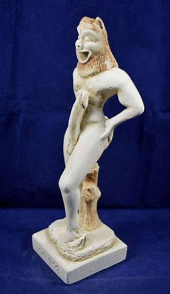

Living Statue Rehabilitation and Rehoming Network
The Living Statue Rehabilitation and Rehoming Network is an organization founded on the principle that all sentient statues deserve to have a safe and loving home, without regard to any enchantment, bound entities it may contain.
